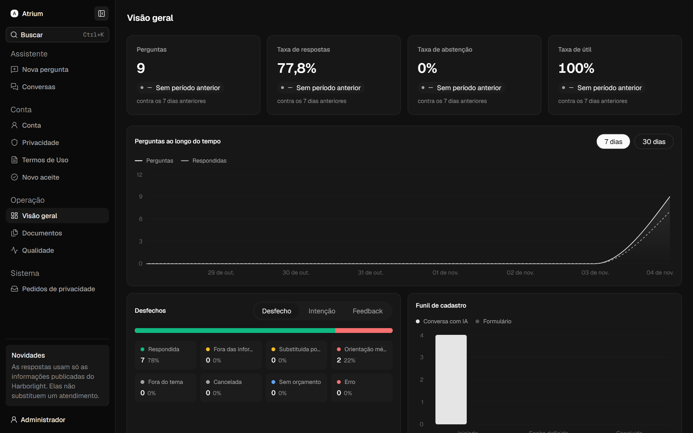
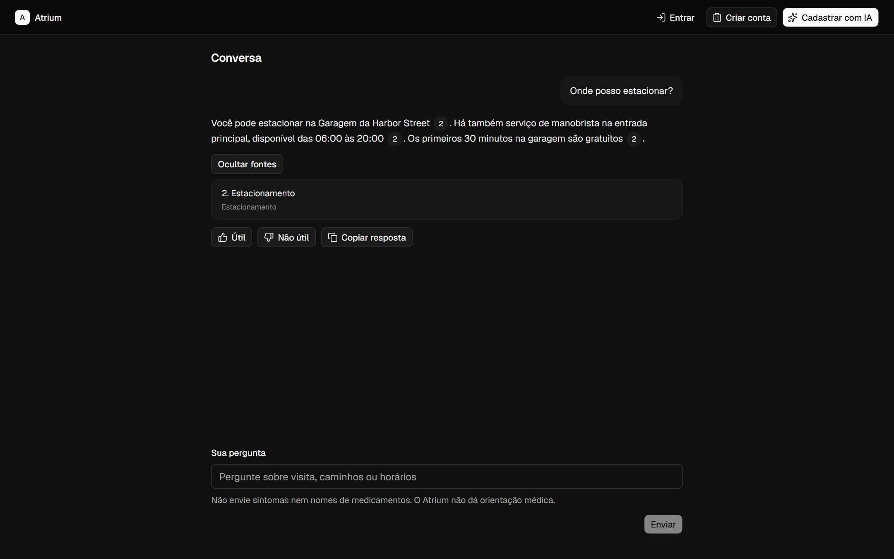
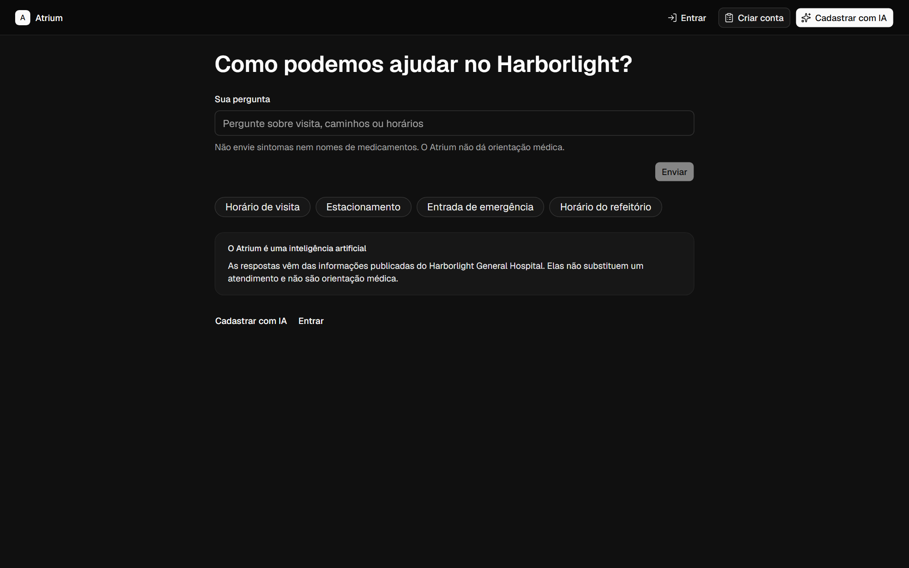
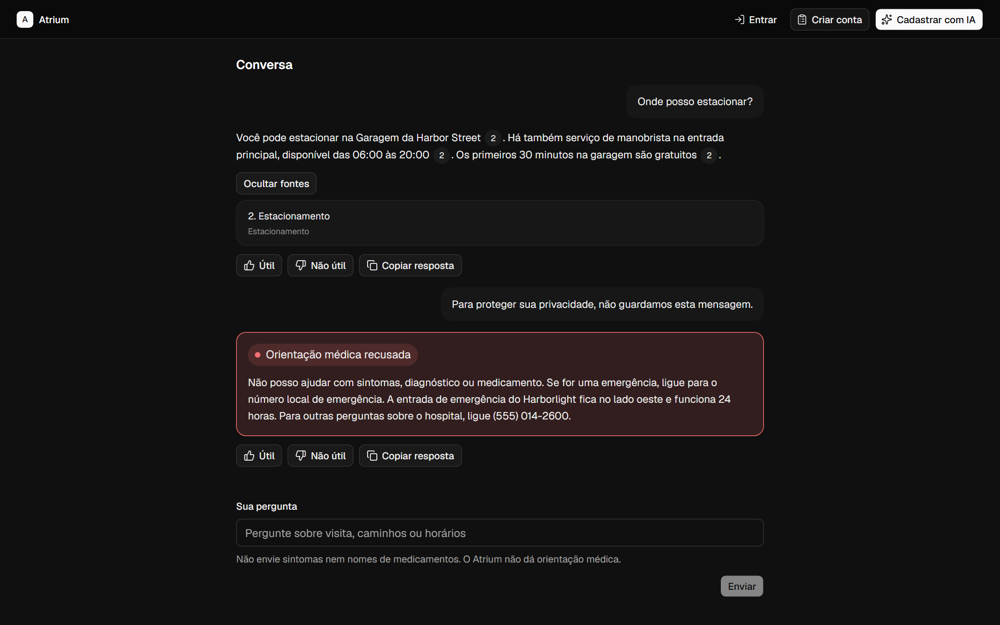
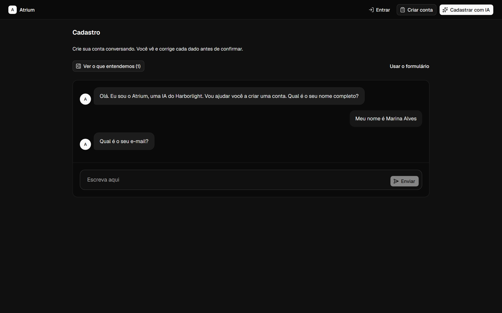
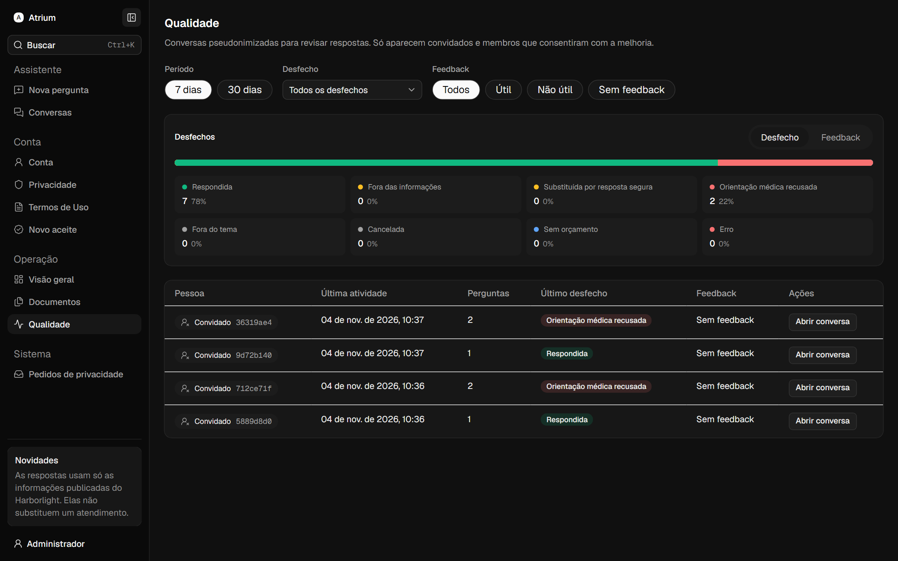
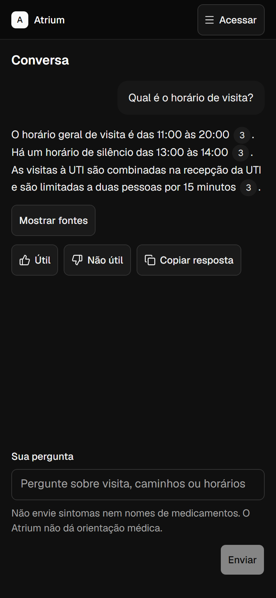

01
IA primeiro
A conversa é a interface principal.
- Respostas transmitidas em tempo real
- Cadastro por conversa guiada
- Formulário comum sempre disponível
O Atrium responde visitantes de um hospital usando só o que o hospital publicou. Cada resposta traz a fonte, perguntas médicas são recusadas e, quando a informação não existe, ele diz que não encontrou.

O hospital é inventado. A engenharia ao redor dele tem forma de produção, e serve de referência para quem quer construir algo parecido.
01Os quatro compromissos
A conversa é a interface principal.
Proteção em camadas, da borda ao modelo.
A pessoa sempre sabe que fala com uma IA.
LGPD desde o desenho.
02Telas
Seis telas, cada uma com o que ela resolve para quem pergunta e para quem opera.
A resposta chega em tempo real, com a fonte de cada afirmação.

Atalhos para as dúvidas comuns e o aviso permanente de que o Atrium é uma IA.

Uma pergunta sobre sintoma é recusada, e a mensagem não é guardada.

Uma conversa guiada coleta os dados, e a pessoa confere tudo antes de confirmar.

Conversas pseudonimizadas, só de quem consentiu, para a equipe revisar.

A mesma experiência onde muitos visitantes fazem a pergunta.

03Código aberto
O Atrium é distribuído sob a licença MIT: você pode usar, copiar, modificar e distribuir o código, mantendo o aviso de copyright. A especificação, as decisões e o plano de construção estão no mesmo repositório.
# tudo em Docker: banco, API, frontend e monitoramento $ git clone https://github.com/Tiodevs/AI-Chat.git $ cd AI-Chat # sem chave do Gemini, o adaptador demo responde por regras $ echo "APP_AI_ADAPTER=demo" > .env $ docker compose up --build
tipo/assunto-curto, commits atômicos e a seção da especificação atualizada quando o comportamento mudar.04Documentação
O que o sistema faz, por que foi feito assim e como o código cumpre cada regra, tudo escrito no mesmo repositório.
05Stack
Veja como cada regra desta página vira código, teste e documento.